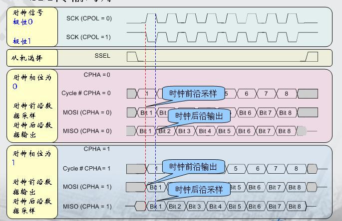
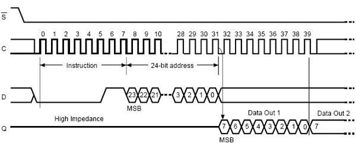
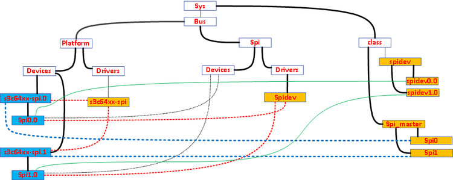

linux spi驱动分析整理
声明：
该篇分析参考/拷贝于：
http://www.embedu.org/Column/Column367.htm
http://www.linuxidc.com/Linux/2011-11/46656.htm
http://www.arm9home.net/read.php?tid=10788等
经过个人的理解整理，不保证内容的正确性！欢迎指出错误的地方！
1、SPI总线：
SPI(同步外设接口)是由摩托罗拉公司开发的全双工同步串行总线,其接口由 MISO(串行数据输入),MOSI(串行数据输出),SCK(串行移位时钟),SS/CS(从使能信号)四种信号构成(当然了,现在芯片技术日新月异,SPI 模块的结构也在变化中,象 OMAP 系列中的 SPI 模块还支持 5 线的一种模式),SS /CS决定了唯一的与主设备通信的从设备,主设备通过产生移位时钟来发起通讯。通讯时,数据由 MOSI 输出,MISO 输入,数据在时钟的上升
或下降沿由 MOSI 输出,在紧接着的下降或上升沿由 MISO 读入,这样经过 8/16 次时钟的改变,完成 8/16 位数据的传输。

SPI 模块为了和外设进行数据交换,根据外设工作要求,其输出串行同步时钟极性(CPOL)和相位(CPHA)可以进行配置。如果 CPOL=0,串行同步时钟的空闲状态为低电平;如果CPOL=1,串行同步时钟的空闲状态为高电平。如果 CPHA=0,在串行同步时钟的第一个跳变沿(上升或下降)数据被采样;如果 CPHA=1,在串行同步时钟的第二个跳变沿(上升或下降)数据被采样。

2、LINUX驱动的分层与分离：
在面向对象的程序设计中,可以为某一类相似的事物定义一个基类,而具体的事物可以继承这个基类中的函数。Linux 内核中频繁使用到面向对象的设计思想。在设备驱动方面,往往为同类的设备设计了一个框架,而框架中的核心层则实现了该设备通用的一些功能。而且具体的设备不想使用核心层的函数,它可以重载之。这就是我们所说的在驱动设计中的分层思想。
此外,在驱动的设计中,我们还会使用分离的思想。如果一个设备的驱动和 host 的驱动休戚相关,那么,这就意味着这个普通的设备如果用在不同的 host 上,会采用 n 个版本的驱动。如果产品单一,也许感觉不到不使用分离思想来设计驱动的危害,但是我们想一下,这个世上被人们称道的多是什么?精品,艺术品!精品如何打造?注重细节,不只考虑单一需求!大家开发个东西不容易,怎么能随随便便就让它茫然众码矣呢,所以,何时何地,我们都要以打造精品的思想来要求自己,让自己的劳动力不浪费。
使用分离的思想来设计驱动的话,就够就是这样的:
外设驱动与主机控制器的驱动不相关,主机控制器的驱动不关心外设,而外设驱动也不关心主机,外设只是访问核心层的通用 API 进行数据传输,主机和外设之间可以进行任意的组合。相当于在控制器驱动和设备驱动之间增加一层核心层,对内对外都隐藏了对端的不确定性。仔细通读USB,SPI,PCI 的代码就会发现这种思想的体现。
3、LINUX设备模型：
设备驱动模型中,主要包含总线、设备和驱动三个实体,总线将设备和驱动绑定,在系统每注册一个设备的时候,会寻找与之匹配的驱动,反之,在系统每注册一个驱动的时候,会寻找与之匹配的设备,而匹配由总线完成。
根据这个模型的需求,一个现实的 linux 设备和驱动通常都需要挂接在一种总线上,否则谁来管他们的匹配啊,注册驱动和注册设备都是由不同的 API 来完成的。对于本身依附于 PCI,USB,I2C,SPI 等的设备而言,这自然不是问题,但是在嵌入式系统里面,Controller 系统中集成的外设控制器,挂载在内存空间的外设确不依附于此类总线。就像 SPI 控制器,PCI 控制器等等都是这种情况。那如何处理呢？基于这一背景,Linux 发明了一种虚拟的总线称为 platform 总线,相应的设备称为 platform_device,而驱动称为 platform_driver。关于platform总线这里就不多说了，网上有很多资料。
使用 platform 总线在驱动中大体有以下几个好处:
a,使得设备被挂接在一个总线上,使配套的 sysfs 节点、设备电源管理都成为可能。
b, 隔离了 BSP 和驱动。BSP 中定义 platform 设备和设备使用的资源(可以使用platform_data 的形式来包括 platform 设备的设备),设备的具体配置信息。而在驱动中,只需要通过通用 API 去获取资源和数据,做到了板相关代码和驱动代码的分离,使得驱动具有更好的可扩展性和跨平台性。
4、LINUX SPI 核心层：
核心层代码负责这个框架中通用的部分，满足分层的思想，位于drivers/spi/spi.c。主要承担的工作包括:注册 spi总线,提供基本 SPI 总线操作 API：
int spi_register_driver(struct spi_driver *sdrv)；
struct spi_device *spi_alloc_device(struct spi_master *master)；
int spi_add_device(struct spi_device *spi)；
struct spi_device *spi_new_device(struct spi_master *master, struct spi_board_info *chip)；
struct spi_master *spi_alloc_master(struct device *dev, unsigned size)；
int spi_register_master(struct spi_master *master)；
void spi_unregister_master(struct spi_master *master)；
int spi_sync(struct spi_device *spi, struct spi_message *message)；
int spi_write_then_read(struct spi_device *spi, const u8 *txbuf, unsigned n_tx, u8 *rxbuf, unsigned n_rx)；
spi_register_board_info(struct spi_board_info const *info, unsigned n)；
等......（具体查看/driver/spi/spi.c）
4.1、spi主机master
在 Linux 中,每一个类型的驱动都会有一个相应的结构体来描述,spi_master 就是用来描述 SPI 主机控制器驱动的,其主要成员是bus_num,cs,spi 模式和时钟设置用到的函数,数据传输用到的函数等。一个 master 对应一个 spi 总线,或者说是一个 spi 接口：
struct spi_master {
struct device dev;
s16 bus_num; //表示是SPI主机控制器的编号。由平台代码决定
u16 num_chipselect; //控制器支持的片选数量，即能支持多少个spi设备
int (*setup)(struct spi_device *spi); //针对设备设置SPI的工作时钟及数据传输模式等。在spi_add_device函数中调用。
int (*transfer)(struct spi_device *spi, struct spi_message *mesg); //实现数据的双向传输，可能会睡眠
void (*cleanup)(struct spi_device *spi); //注销时调用
};
SPI主机驱动中分配、注册和注销 SPI 主机驱动结构体将调用spi核心层API: spi_alloc_master(); spi_register_master(); spi_unregister_master();
实际上在master的驱动中实现的就是spi_master中的初始化以及注册，其中最重要的就是transfer和setup这两个操作的实现。spi每次数据传输最终调用到的函数就是这里的transfer。该函数就对应着实际硬件上寄存器的控制。setup同理。
这里可能会有疑问,spi master controller 注册对应的驱动框架里的哪一层?按说,spi 主机控制器已经作为 platform 设备都注册过了。这里就需要用驱动设计里面的分层思想来解释。使用到 platform 总线 API 注册到 platform总线上的控制器设备和驱动,都是 common 的部分。specific 的部分,会在 platform driver注册后,在 probe 函数里面基于注册的 common 部分的资源信息来具体实现。称之为spi_master 的注册部分。
4.2、spi从机slave
依附于spi总线的驱动都会有一个spi_driver结构体来描述，结构体中定义对应的操作函数指针：
struct spi_driver {
int (*probe)(struct spi_device *spi);
int (*remove)(struct spi_device *spi);
void (*shutdown)(struct spi_device *spi);
int (*suspend)(struct spi_device *spi, pm_message_t mesg);
int (*resume)(struct spi_device *spi);
struct device_driver driver;
};
依附于spi总线的设备都会有一个spi_device结构体来描述，结构中定义了设备的片选、模式、速率以及对应主机驱动的spi_master等。
struct spi_device {
struct device dev;
struct spi_master *master;
u32 max_speed_hz;
u8 chip_select;
u8 mode;
#define SPI_CPHA 0x01 /* clock phase */
#define SPI_CPOL 0x02 /* clock polarity */
#define SPI_MODE_0 (0|0) /* (original MicroWire) */
#define SPI_MODE_1 (0|SPI_CPHA)
#define SPI_MODE_2 (SPI_CPOL|0)
#define SPI_MODE_3 (SPI_CPOL|SPI_CPHA)
#define SPI_CS_HIGH 0x04 /* chipselect active high? */
#define SPI_LSB_FIRST 0x08 /* per-word bits-on-wire */
#define SPI_3WIRE 0x10 /* SI/SO signals shared */
#define SPI_LOOP 0x20 /* loopback mode */
u8 bits_per_word;
int irq;
void *controller_state;
void *controller_data;
char modalias[32];
};
依附于Spi总线的设备驱动对应的总线类型为spi_bus_type，在内核的drivers/spi/spi.c中定义。
struct bus_type spi_bus_type = {
.name = "spi",
.dev_attrs = spi_dev_attrs,
.match = spi_match_device,
.uevent = spi_uevent,
.suspend = spi_suspend,
.resume = spi_resume,
};
EXPORT_SYMBOL_GPL(spi_bus_type);
而具体的spi外设信息linux spi 用 struct spi_board_info来描述，该结构体包含外设的片选号、总线号、模式以及传输速率等信息。在系统初始化时将会调用spi_register_board_info()来注册硬件信息。
spi设备驱动将会调用spi_register_driver();来注册一个spi_driver驱动，注册时最终会调用spi_bus_type中的match来使spi_driver和spi_device相匹配。设备驱动spi_driver是在驱动里定义的，但是spi_device呢？事实上上文提到的spi_master的注册会在spi_register_board_info之后，spi_master注册的过程中会调用scan_boardinfo扫描board_list，找到挂接在它上面的spi设备，然后创建并注册spi_device。
5、LINUX SPI 控制器设备和驱动：
在嵌入式系统中，一般处理器中都集成了spi控制器。该控制器一般都为master。以下分析spi控制器master驱动。
由设备模型可知，spi控制器的设备和驱动是要挂在总线上的。所以spi控制器驱动用到了platform虚拟总线。spi控制器platform设备在BSP的初始化中被注册，驱动一般放在driver/spi/下。
如，在 BSP 文件中添加相应的资源代码:
通常,会在 arch/***/mach-***/xxxx.c 中添加，例如：
static struct platform_device ***_spi_pdev1 = {
.name = “***_spi”,
.id = 1,
.resource = ***_spi_resources1,
.num_resources = ARRAY_SIZE(***_spi_resources1),
.dev = {
.platform_data = &***_spi_pdata1,
},
};
然后会在 BSP 的 init 过程中使用 platform_device_register 将它注册进系统。若片上有n个spi控制器，可以在此定义n个platform_device。注册成功后即可在sys/bus/platform/devices下看到对应的***_spi.n。
spi控制器驱动代码init时调用platform_driver_register：
static int __init xxxx_spi_init(void)
{
return platform_driver_register(&xxxx_spi_driver); //注册spi驱动器的platform驱动
}
注册成功后即可在sys/bus/platform/drivers下看到对应的***_spi。
platform_driver和platform_device匹配后，会调用驱动中的***_probe。然后根据传入的platform_device参数，构建一个用于描述SPI控制器的结构体spi_master，并注册。spi_register_master(master)。后续注册的spi_device需要选定自己的spi_master，并利用spi_master提供的传输功能传输spi数据。
仔细浏览代码可以发现,在 SPI 向 platform 总线注册的时候,象 platform_device 中的device_data 或 driver_data 都是空的,并没有将它赋值,这些都是在 probe 函数中完成的。
在probe 函数里面的数据结构的设计和代码都是按照驱动框架的要求来实现的,主要包括 spi controller memory 的映射,IRQ 的注册,controller 的 reset 和对 register 进行初始化赋值。调用spi_alloc_master分配spi_master设备，对spi_master进行赋值等。最后,它将调用 spi_bitbang_start()来创建一个 work queue,由此 SPI 设备驱动可以向这个工作队列注册 transfer 方法。
接下来就得实现spi_master结构中的transfer、setup、cleanup及中断处理等的方法。
6、LINUX SPI 外设驱动：
不同的spi外设在spi总线通信上的需求不尽相同，比如模式、时钟速率、片选脚等等。这些跟具体硬件相关的信息都用spi_board_info来描述。在系统初始化时调用spi_register_board_info来将板上所有的外设注册到board_list链表上。
以m25p80为参考：
在S5PC100对应的m25p10 BSP代码中：
static struct spi_board_info s3c_spi_devs[] __initdata = {
{
.modalias = "m25p10",
.mode = SPI_MODE_0, //CPOL=0, CPHA=0 此处选择具体数据传输模式
.max_speed_hz = 10000000, //最大的spi时钟频率
/* Connected to SPI-0 as 1st Slave */
.bus_num = 0, //设备连接在spi控制器0上
.chip_select = 0, //片选线号，在S5PC100的控制器驱动中没有使用它作为片选的依据，而是选择了下文controller_data里的方法。
.controller_data = &smdk_spi0_csi[0],
},
};
在这可以看到对m25p10这块flash芯片的spi通信模式等的初始化。注意spi_board_info结构中的modalias元素，在这的名字应和对应的spi设备驱动中spi_driver里的driver的name一致。因为spi_driver和spi_device在总线匹配时会对比这个名字，一样则匹配成功。
static struct s3c64xx_spi_csinfo smdk_spi0_csi[] = {
[0] = {
.set_level = smdk_m25p10_cs_set_level,
.fb_delay = 0x3,
},
};
static void smdk_m25p10_cs_set_level(int high) //spi控制器会用这个方法设置cs
{
u32 val;
val = readl(S5PC1XX_GPBDAT);
if (high)
val |= (1<<3);//拉高片选脚
else
val &= ~(1<<3);//拉低片选脚
writel(val, S5PC1XX_GPBDAT);
}
spi的片选脚是可配置的，smdk_m25p10_cs_set_level()会被master控制器驱动调用，用来使能外设。
spi_register_board_info(s3c_spi_devs, ARRAY_SIZE(s3c_spi_devs));//注册spi_board_info。这个代码会把spi_board_info注册要链表board_list上。
以linux内核中的/driver/mtd/devices/m25p80.c驱动为参考。
static struct spi_driver m25p80_driver = { //spi_driver的构建
.driver = {
.name = "m25p80",
.bus = &spi_bus_type,
.owner = THIS_MODULE,
},
.probe = m25p_probe,
.remove = __devexit_p(m25p_remove),
*/
};
spi_register_driver(&m25p80_driver);//spi driver的注册
在有匹配的spi device时，会调用m25p_probe
static int __devinit m25p_probe(struct spi_device *spi)
{
……
}
根据传入的spi_device参数，可以找到对应的spi_master。接下来就可以利用spi子系统为我们完成数据交互了。可以参看m25p80_read函数。要完成传输，先理解下面几个结构的含义：（这两个结构的定义及详细注释参见include/linux/spi/spi.h）
spi_message：描述一次完整的传输，即cs信号从高->底->高的传输
spi_transfer：多个spi_transfer够成一个spi_message
举例说明：m25p80的读过程如下图

可以分解为两个spi_ transfer一个是写命令，另一个是读数据。具体实现参见m25p80.c中的m25p80_read函数。下面内容摘取之此函数。
struct spi_transfer t[2]; //定义了两个spi_transfer
struct spi_message m; //定义了两个spi_message
spi_message_init(&m); //初始化其transfers链表
t[0].tx_buf = flash->command;
t[0].len = CMD_SIZE + FAST_READ_DUMMY_BYTE; //定义第一个transfer的写指针和长度
spi_message_add_tail(&t[0], &m); //添加到spi_message
t[1].rx_buf = buf;
t[1].len = len; //定义第二个transfer的读指针和长度
spi_message_add_tail(&t[1], &m); //添加到spi_message
flash->command[0] = OPCODE_READ;
flash->command[1] = from >> 16;
flash->command[2] = from >> 8;
flash->command[3] = from; //初始化前面写buf的内容
spi_sync(flash->spi, &m); //调用spi_master发送spi_message
// spi_sync为同步方式发送，还可以用spi_async异步方式，那样的话，需要设置回调完成函数。
另外你也可以选择一些封装好的更容易使用的函数，这些函数可以在include/linux/spi/spi.h文件中找到，如：
extern int spi_write_then_read(struct spi_device *spi, const u8 *txbuf, unsigned n_tx, u8 *rxbuf, unsigned n_rx);
对于 SPI 的设备驱动,得益于 linux driver framework 设计者的功劳,这里我们只需要用到 spi.h 中定义的方法就可以了,不用去修改 spi 控制器的代码。一般的,我们的设备驱动框架是使用 spi_regiser_driver 向系统进行注册,就可以让系统用你指定的与.name 相匹配的硬件交互并执行你的读写请求,满足分离的思想。
7、linux spi 通用驱动spidev.c
/driver/spi/spidev.c是linux内核提供的一个spi通用驱动。如果不想写具体的spi芯片驱动，使用这个驱动能给我们带来很多便利，非常方便。在内核代码下的Documentation/spi/spidev是对spidev的描述。其中还提供一个spidev_test.c的测试程序。
使用很简单，只要在你的BSP代码中将spi_board_info的modalias定义为.modalias = "spidev"，这样设备启动后就可以在/dev看到spidev0.0字样. 0.0 就是bus_num.chip_select（对应BSP中的设置）
spidev注册成字符设备，可以方便的使用其提供的标准read/write/ioctl功能函数对设备进行读写设置操作。设备的全双工半双工都得以实现。具体使用可以细看spidev.c或借鉴spidev_test.c
下图是驱动加载成功后，sys目录下的主要结构，由于目录非常复杂仅仅列出了主要的结构sys目录下spi子系统结构：

linux下的设备模型包括几个主要的概念
sysfs （dev是用户空间接口，根据sysfs下的class目录由mdev负责建立）
bus总线，linux下的设备都是建立在总线上的，platform总线是一个虚拟的总线，所有的的片上设备基本上都接在这个虚拟总线上device是设备
device_driver是设备驱动class是类别，从功能角度对设备进行分类。
注意，在sys/bus目录下有platform目录和spi目录
这两个目录下面的设备分别代表什么呢？
platform下的设备有s3c64xx-spi0和s3c64xx-spi1分别对应了s3c6410上的spi0和spi1接口。
参考：
http://www.embedu.org/Column/Column367.htm
http://www.linuxidc.com/Linux/2011-11/46656.htm
http://www.arm9home.net/read.php?tid=10788等